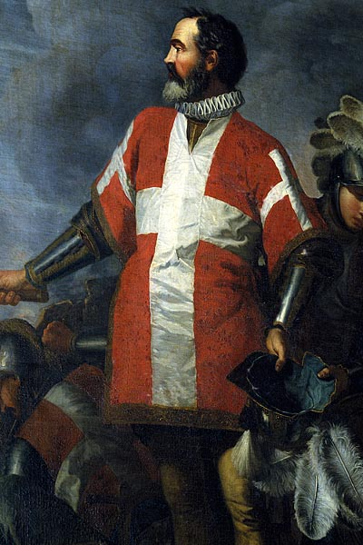
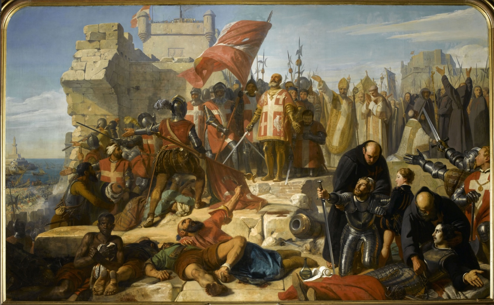
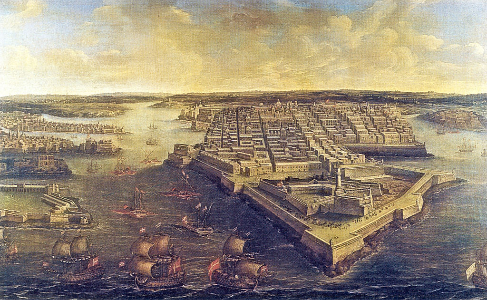
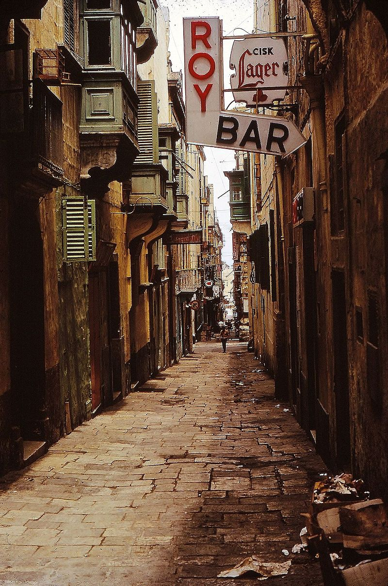
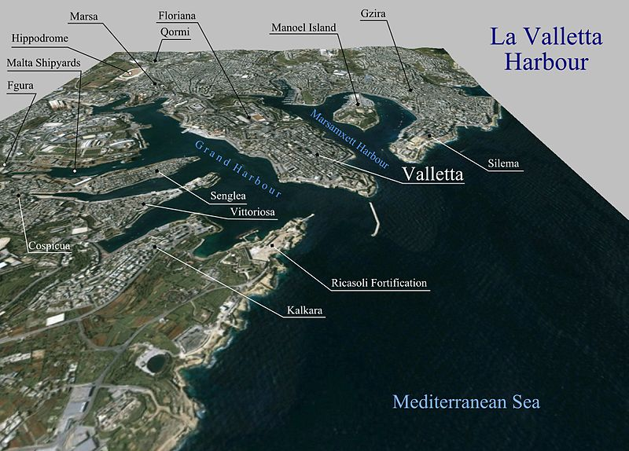

Valletta
Introduction
Valletta is the capital of the Republic of Malta. It's one of the smallest capitals in the world and it is located on
the eastern part of the island of Malta on a tiny Peninsula surrounded by capes. Because so much of what had been built
during the Rennaissance has been well-kept it's one of the oldest cities in the Mediterranean.
Name Origin

Jean Parisot de Valette
During the Great Siege of Malta in 1565, the Ottoman Empire successfully occupied the entire Peninsula and bombarded the nearby cities accross the harbor but under the leadership of Grandmaster Jean de Valette, the Knights of Saint John managed to fend them off from the island.
In conmemoration to this and to prevent further invasions, the grandmaster ordered the foundation of a fortress city on the hill of the Peninsula, today's capital of Malta. The Knights of Saint John were later renamed to the Knights of Malta and have become part of the identity of Malta.
History

The Great Siege of Malta
Most of what had been built in the peninsula prior to 1566, when the construction of the city began, was
demolished. It had been chosen as a planned city and thus, was designed as a grid block by architect Francesco Laparelli,
and many of its most important buildings were built by Gerolamo Cassar, another skillful architect of the Rennaissance.
The Knights of Malta were expelled from the island in 1798 by the recently born First French Republic but
they were shortly after defeated by the British Empire and the island has ever since been a British subject. In 1813 it was formally
turned into a Crown Colony. The city was rebuilt and civil projects resumed. Valletta reached its maximum extension as it
had filled the entire peninsula.

British Valletta

Streets of contemporary Valletta
Although industrialization took off in Malta under British rule, the city itself didn't see much of a transformation.
Railroads and public transportation took off in the nearby towns, which were now better connected to the city walls of the already full
capital. And also although the city suffered heavy bombing during World War II, most of the historical buildings remain intact except for the
Royal Opera House, which is still in ruins. Shortly after the country gained its independence the entire city was recognized as World Heritage Site.
Transportation
Valletta is surrounded by water on three sides so the only convenient way of entering and leaving is through the main wall gates. Inside these walls
vehicles are very restricted and many streets are pedestrian-only, but being such a small city almost everything is within walking distance and there
are a few bus lines that circle the city. Right outside the walls there is a bus station that serves as a transportation hub for the entire island.

Cultural Sites

Follow us